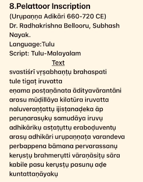

The Shudra Stigma: How Caste Myths, Elite Neglect, and Buried History Silenced Tulu
Not every language is conquered by armies. Some are conquered by ideas.
That is the story of Tulu. For nearly two centuries, Tulu was made to wear a social label: “Shudra Bhasha.”
I. The Manufacture of a Stigma: The Post-Keladi Erasure
Complementing these historical finds, the lexical research of P.S. Rai provided the final pillar of evidence. By documenting Tulu’s core vocabulary for maritime navigation and agriculture, Rai proved the language was entirely original and autochthonous, possessing deep-rooted terminology that owed nothing to external linguistic families."Following the fall of the Keladi Nayakas, Tulu was rebranded as a "Shudra tongue"—a language fit only for the homestead, never the courtroom.


II. The Stone That Shattered the Myth


The Pelatur Inscription proved that in the 7th century, Tulu was the language of statecraft long before elite neglect sought to silence it.
III. The First Rebel: S.U. Paniyadi

In 1928, S.U. Paniyadi authored the Tulu Vyakarana, proving Tulu possessed a sophisticated, independent internal logic.Paniyadi recognized that a language without a written grammar is vulnerable to being labeled 'primitive.' His 1928 rebellion was an intellectual offensive; he argued that Tulu's exclusion from state patronage was not due to a lack of merit, but a deliberate act of silencing by the era's socio-political gatekeepers
Providing mathematical proof of Tulu's independent structure.
Demanding the reclamation of the Tulu-Tigalari script.
IV. The Intellectual Revolution


- Devi Mahatme – By the Adi Kavi of Tulu.
- Tulu Mahabharato – 14th-century translation by Arunabja.
- Karnaparvo – Authored by King Harihara.
- Sri Bhagavatho – 17th-century epic by Vishnutunga.
- Kaveri – Classical poetic architecture.
- Tulu Ramayana – Completing the Classical Triad.
Mundkur’s Evidence Toolkit:
- The Tolocoira Link: Ancient Greco-Roman cartography.
- Toponymic Archaeology: Village names as "linguistic fossils."
- Maritime Sovereignty: Vocabulary unique to the coast.
Conclusion: From Stigma to Sovereignty
The label of "Shudra Bhasha" was an administrative weapon. By branding Tulu as a language of the fields, it was kept out of the Eighth Schedule for over 70 years.